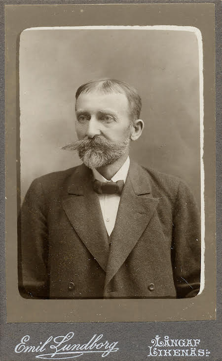

En digital tolkning av
Toner från Klarälvsdalen av Jakob Karlstam

Diktning på dalbymål
Här presenteras ett urval dikter skrivna av Ransbysonen Jakob Karlstam, samtliga skrivna på den särpräglade, nordvärmländska dialekten dalbymål.
Dikterna publicerades ursprunligen år 1927 i skriften Toner från Klarälvsdalen, för att kunna spridas vidare till godtemplare i Värmland, för att hjälpa till att hålla dem vid ett gott humör.
Så här skriver Harald Wadman, ledare för IOGT Värmlands distriktsloge i 33 år, i diktsamlingens inledning:
På många nordvärmländksa godtemplares upprepade fram-
ställningar kommer här deras och allas vår avhållne vän,
Jakob Karlstam med en samling dikter: Toner från Klar-
älvsdalen. Alla dessa poem och visor äro just desammma han
så ofta uppläst eller sjungit och därmed glatt och roas oss och
tusenden andra under möten och sammankomster i vilka han
deltagit. Och glädje skall hans sånger och dikter kunna skänka
också till läsaren av desamma, såvida ljus livstro och stor humor,
varav Karlstams lyra äro överfylld, kunna göra läsaren glad.
Det är för att med dessa sånger i än vidare kretsar vara
glädjespridare, som författaren av sina äldalsvänner manats
fram med denna diktbok. Men också — och ej minst därför —
att försäljningen av densamma skall skänka honom en liten
inkomst, vilken även blir ett välförtjänt tack för allt hans upp-
offrande arbete i alla goda strävandens tjänst och för den
glädje han därvid omkring sig spridit. Båda dessa syftemål
äro högst behjärtansvärda. Måtte båda vinnas, önskar hans
HARALD WADMAN
Dikterna presenteras här var och en för sig, i den sidordning de förekommer i den tryckta diktboken. På respektive dikts seda återfinns dels en bearbetad och sökbar pdf med bakomliggande OCR och transkriberad text.
Det särpräglade Dalbymålet är inte lätt att förstå alla gånger, och den som önskar fördjupa sig kan botanisera i den digitala utgåvan av
Dalbyordboken. Vare sig den digitala eller den tryckta utgåvan är helt enkla att använda för den som saknar kunskap i nordvärmländska dialekter eller närbesläktade dialekter, då den endast tillåter sökningar på den svenska ordformen.
Den ursprungliga handskriva Dalbyordboken utarbetades av Karl L:son Bergkvist och Jacob Jacobsson mellan 1948 och 1968.
Arbetet med renskrivning, transkribering, granskning och inläsning av grundmaterialet utfördes av Kulturkoppra i Ransby 1995–2001 och pågick till största delen av tiden som ett EU-projekt under Värmlandskooperativen.
Den tryckta Dalbyordboken är utgiven med tillstånd från ISOF i Uppsala, som förvarar grundmaterialet.
Arbetet med att föra över Dalbyordboken till en databas, och göra Dalbyordboken tillgänglig på nätet är utfört av Martin Wiss 2015.
Nätordboken kommer i ett senare skede att kompletteras med den lista över egennamn och svårfunna ord som finns som bilagor i den tryckta ordboken.
Skalden Karlstam gav under sin verksamma tid ut fyra diktsamlingar:
Allvarsord och raljeri (1904)
Toner från Klarälvsdalen (1927)
Bygdekrönika (1929)
Slagskuggor och ljuspunkter (1933)
Han skrev också krönikor på vers och deltog vid olika festligheter och jubiléer som uppskattad uppläsare.
En konstnärlig ådra tycks ha funnits i familjen som kom från Långav.
Brodern Emil Lundborg blev bygdens fotograf och har bland annat tagit den här presenterade porträttbilden av sin bror.
Jakob utbildade sig till målare men ägnade mycket tid åt versskrivandet.
Han bodde ett par år i Stockholm men återvände till Dalby och uppförde ett amerikainspirerat hus i Ransby.

Den tryckta Dalbyordboken är utgiven med tillstånd från ISOF i Uppsala, som förvarar grundmaterialet. Arbetet med att föra över Dalbyordboken till en databas, och göra Dalbyordboken tillgänglig på nätet är utfört av Martin Wiss 2015. Nätordboken kommer i ett senare skede att kompletteras med den lista över egennamn och svårfunna ord som finns som bilagor i den tryckta ordboken.